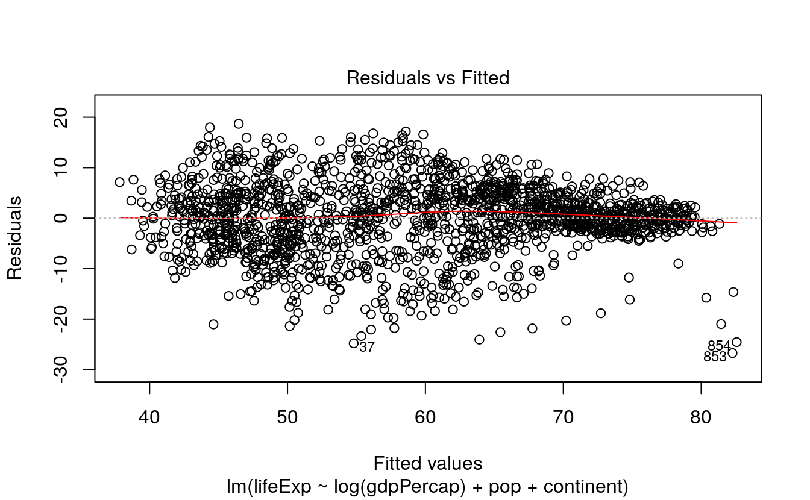
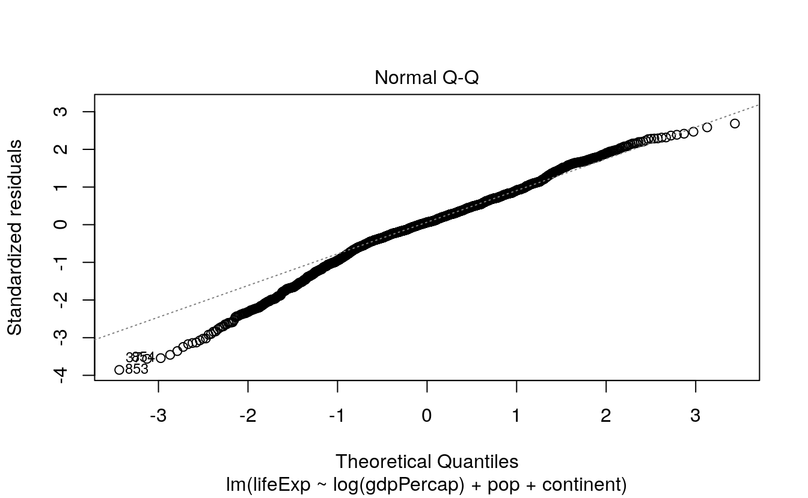

7 Data Visualization for ML models
7.1 Introduction
Source: https://socviz.co/modeling.html
Data visualization is about more than generating figures that display the raw numbers from a table of data. Right from the beginning, it involves summarizing or transforming parts of the data, and then plotting the results. Statistical models are a central part of that process. In this Chapter, we will begin by looking briefly at how ggplot can use various modeling techniques directly within geoms. Then we will see how to use the broom and margins libraries to tidily extract and plot estimates from models that we fit ourselves.
# load libraries
library(ggplot2)
library(dplyr)
#>
#> Attaching package: 'dplyr'
#> The following objects are masked from 'package:stats':
#>
#> filter, lag
#> The following objects are masked from 'package:base':
#>
#> intersect, setdiff, setequal, union
library(tidyr)
library(purrr)
library(socviz) # devtools::install_github("kjhealy/socviz")
library(gapminder)
# plot two lines
p <- ggplot(data = gapminder,
mapping = aes(x = log(gdpPercap), y = lifeExp))
p + geom_point(alpha=0.1) +
geom_smooth(color = "tomato", fill="tomato", method = MASS::rlm) +
geom_smooth(color = "steelblue", fill="steelblue", method = "lm")
#> `geom_smooth()` using formula 'y ~ x'
#> `geom_smooth()` using formula 'y ~ x'
# plot spline
p + geom_point(alpha=0.1) +
geom_smooth(color = "tomato", method = "lm", size = 1.2,
formula = y ~ splines::bs(x, 3), se = FALSE)
p + geom_point(alpha=0.1) +
geom_quantile(color = "tomato", size = 1.2, method = "rqss",
lambda = 1, quantiles = c(0.20, 0.5, 0.85))
#> Smoothing formula not specified. Using: y ~ qss(x, lambda = 1)
#> Warning in rq.fit.sfn(x, y, tau = tau, rhs = rhs, control = control, ...): tiny diagonals replaced with Inf when calling blkfctHistograms, density plots, boxplots, and other geoms compute either single numbers or new variables before plotting them. As we saw in Section 4.4, these calculations are done by stat_ functions, each of which works hand-in-hand with its default geom_ function, and vice versa. Moreover, from the smoothing lines we drew from almost the very first plots we made, we have seen that stat_ functions can do a fair amount of calculation and even model estimation on the fly. The geom_smooth() function can take a range of method arguments to fit LOESS, OLS, and robust regression lines, amongst others.
Both the geom_smooth() and geom_quantile() functions can also be instructed to use different formulas to produce their fits. In the top panel of Figure 6.1, we access the MASS library’s rlm function to fit a robust regression line. In the second panel, the bs function is invoked directly from the splines library in the same way, to fit a polynominal curve to the data. This is the same approach to directly accessing functions without loading a whole library that we have already used several times when using functions from the scales library. The geom_quantile() function, meanwhile, is like a specialized version of geom_smooth() that can fit quantile regression lines using a variety of methods. The quantiles argument takes a vector specifying the quantiles at which to fit the lines.
7.2 Show several fits at once, with a legend
As we just saw in the first panel of Figure 6.1, where we plotted both an OLS and a robust regression line, we can look at several fits at once on the same plot by layering on new smoothers with geom_smooth(). As long as we set the color and fill aesthetics to different values for each fit, we can easily distinguish them visually. However, ggplot will not draw a legend that guides us about which fit is which. This is because the smoothers are not logically connected to one another. They exist as separate layers. What if we are comparing several different fits and want a legend describing them?
As it turns out, geom_smooth() can do this via the slightly unusual route of mapping the color and fill aesthetics to a string describing the model we are fitting, and then using scale_color_manual() and scale_fill_manual() to create the legend. First we use brewer.pal() from the RColorBrewer library to extract three qualitatively different colors from a larger palette. The colors are represented as hex values. As before use the :: convention to use the function without loading the whole library:
model_colors <- RColorBrewer::brewer.pal(3, "Set1")
model_colors
#> [1] "#E41A1C" "#377EB8" "#4DAF4A"Then we create a plot with three different smoothers, mapping the color and fill within the aes() function as the name of the smoother:
p0 <- ggplot(data = gapminder,
mapping = aes(x = log(gdpPercap), y = lifeExp))
p1 <- p0 + geom_point(alpha = 0.2) +
geom_smooth(method = "lm", aes(color = "OLS", fill = "OLS")) +
geom_smooth(method = "lm", formula = y ~ splines::bs(x, df = 3),
aes(color = "Cubic Spline", fill = "Cubic Spline")) +
geom_smooth(method = "loess",
aes(color = "LOESS", fill = "LOESS"))
p1 + scale_color_manual(name = "Models", values = model_colors) +
scale_fill_manual(name = "Models", values = model_colors) +
theme(legend.position = "top")
#> `geom_smooth()` using formula 'y ~ x'
#> `geom_smooth()` using formula 'y ~ x'In a way we have cheated a little here to make the plot work. Until now, we have always mapped aesthetics to the names of variables, not to strings like “OLS” or “Cubic Splines”. In Chapter 3, when we discussed mapping versus setting aesthetics, we saw what happened when we tried to change the color of the points in a scatterplot by setting them to “purple” inside the aes()function. The result was that the points turned red instead, as ggplot in effect created a new variable and labeled it with the word “purple”. We learned there that the aes() function was for mapping variables to aesthetics.
Here we take advantage of that behavior, creating a new single-value variable for the name of each of our models. Ggplot will properly construct the relevant guide if we call scale_color_manual() and scale_fill_manual(). Remember that we have to call two scale functions because we have two mappings. The result is a single plot containing not just our three smoothers, but also an appropriate legend to guide the reader.
These model-fitting features make ggplot very useful for exploratory work, and make it straightforward to generate and compare model-based trends and other summaries as part of the process of descriptive data visualization. The various stat_ functions are a flexible way to add summary estimates of various kinds to plots. But we will also want more than this, including presenting results from models we fit ourselves.
7.3 Look inside model objects
Covering the details of fitting statistical models in R is beyond the scope of this book. For a comprehensive, modern introduction to that topic you should work your way through (Gelman & Hill, 2018). (Harrell, 2016) is also very good on the many practical connections between modeling and graphing data. Similarly, (Gelman, 2004) provides a detailed discussion of the use of graphics as a tool in model-checking and validation. Here we will discuss some ways to take the models that you fit and extract information that is easy to work with in ggplot. Our goal, as always, is to get from however the object is stored to a tidy table of numbers that we can plot. Most classes of statistical model in R will contain the information we need, or will have a special set of functions, or methods, designed to extract it.
We can start by learning a little more about how the output of models is stored in R. Remember, we are always working with objects, and objects have an internal structure consisting of named pieces. Sometimes these are single numbers, sometimes vectors, and sometimes lists of things like vectors, matrices, or formulas.
We have been working extensively with tibbles and data frames. These store tables of data with named columns, perhaps consisting of different classes of variable, such as integers, characters, dates, or factors. Model objects are a little more complicated again.
gapminder
#> # A tibble: 1,704 x 6
#> country continent year lifeExp pop gdpPercap
#> <fct> <fct> <int> <dbl> <int> <dbl>
#> 1 Afghanistan Asia 1952 28.8 8425333 779.
#> 2 Afghanistan Asia 1957 30.3 9240934 821.
#> 3 Afghanistan Asia 1962 32.0 10267083 853.
#> 4 Afghanistan Asia 1967 34.0 11537966 836.
#> 5 Afghanistan Asia 1972 36.1 13079460 740.
#> 6 Afghanistan Asia 1977 38.4 14880372 786.
#> # … with 1,698 more rowsRemember, we can use the str() function to learn more about the internal structure of any object. For example, we can get some information on what class (or classes) of object gapminder is, how large it is, and what components it has. The output from str(gapminder) is somewhat dense:
str(gapminder)
#> tibble [1,704 × 6] (S3: tbl_df/tbl/data.frame)
#> $ country : Factor w/ 142 levels "Afghanistan",..: 1 1 1 1 1 1 1 1 1 1 ...
#> $ continent: Factor w/ 5 levels "Africa","Americas",..: 3 3 3 3 3 3 3 3 3 3 ...
#> $ year : int [1:1704] 1952 1957 1962 1967 1972 1977 1982 1987 1992 1997 ...
#> $ lifeExp : num [1:1704] 28.8 30.3 32 34 36.1 ...
#> $ pop : int [1:1704] 8425333 9240934 10267083 11537966 13079460 14880372 12881816 13867957 16317921 22227415 ...
#> $ gdpPercap: num [1:1704] 779 821 853 836 740 ...There is a lot of information here about the object as a whole and each variable in it. In the same way, statistical models in R have an internal structure. But because models are more complex entities than data tables, their structure is correspondingly more complicated. There are more pieces of information, and more kinds of information, that we might want to use. All of this information is generally stored in or is computable from parts of a model object.
We can create a linear model, an ordinary OLS regression, using the gapminder data. This dataset has a country-year structure that makes an OLS specification like this the wrong one to use. But never mind that for now. We use the lm() function to run the model, and store it in an object called out:
out <- lm(formula = lifeExp ~ gdpPercap + pop + continent,
data = gapminder)The first argument is the formula for the model. lifeExp is the dependent variable and the tilde ~ operator is used to designate the left- and right-hand sides of a model (including in cases, as we saw with facet_wrap() where the model just has a right-hand side.)
Let’s look at the results by asking R to print a summary of the model.
summary(out)
#>
#> Call:
#> lm(formula = lifeExp ~ gdpPercap + pop + continent, data = gapminder)
#>
#> Residuals:
#> Min 1Q Median 3Q Max
#> -49.16 -4.49 0.30 5.11 25.17
#>
#> Coefficients:
#> Estimate Std. Error t value Pr(>|t|)
#> (Intercept) 4.78e+01 3.40e-01 140.82 <2e-16 ***
#> gdpPercap 4.50e-04 2.35e-05 19.16 <2e-16 ***
#> pop 6.57e-09 1.98e-09 3.33 9e-04 ***
#> continentAmericas 1.35e+01 6.00e-01 22.46 <2e-16 ***
#> continentAsia 8.19e+00 5.71e-01 14.34 <2e-16 ***
#> continentEurope 1.75e+01 6.25e-01 27.97 <2e-16 ***
#> continentOceania 1.81e+01 1.78e+00 10.15 <2e-16 ***
#> ---
#> Signif. codes: 0 '***' 0.001 '**' 0.01 '*' 0.05 '.' 0.1 ' ' 1
#>
#> Residual standard error: 8.37 on 1697 degrees of freedom
#> Multiple R-squared: 0.582, Adjusted R-squared: 0.581
#> F-statistic: 394 on 6 and 1697 DF, p-value: <2e-16When we use the summary() function on out, we are not getting a simple feed of what’s in the model object. Instead, like any function, summary() takes its input, performs some actions, and produces output. In this case, what is printed to the console is partly information that is stored inside the model object, and partly information that the summary() function has calculated and formated for display on the screen. Behind the scenes, summary() gets help from other functions. Objects of different classes have default methods associated with them, so that when the generic summary() function is applied to a linear model object, the function knows to pass the work on to a more specialized function that does a bunch of calculations and formatting appropriate to a linear model object. We use the same generic summary() function on data frames, as in summary(gapminder), but in that case a different default method is applied.
Schematic view of a linear model object.Figure 6.3: Schematic view of a linear model object.
The output from summary() gives a precis of the model, but we can’t really do any further analysis with it directly. For example, what if we want to plot something from the model? The information necessary to make plots is inside the out object, but it is not obvious how to use it.
If we take a look at the structure of the model object with str(out) we will find that there is a lot of information in there. Like most complex objects in R, out is organized as a list of components or elements. Several of these elements are themselves lists. Figure 6.3 gives you a schematic view of the contents of a linear model object. In this list of items, elements are single values, some are data frames, and some are additional lists of simpler items. Again, remember our earlier discussion where we said objects could be thought of as being organized like a filing system: cabinets contain drawers, and drawer may contain which may contain pages of information, whole documents, or groups of folders with more documents inside. As an alternative analogy, and sticking with the image of a list, you can think of a master to-do list for a project, where the top-level headings lead to contain additional lists of tasks of different kinds.
The out object created by lm contains several different named elements. Some, like the residual degrees of freedom in the model, are just a single number. Try out$df.residual at the console. Others are much larger entities, such as the data frame used to fit the model, which is retained by default. Try out$model, but be prepared for a lot of stuff to be printed at the console. Other elements have been computed by R and then stored, such as the coefficients of the model and other quantities. You can try out$coefficients, out$residuals, and out$fitted.values, for instance. Others are lists themselves (like qr). So you can see that the summary() function is selecting and printing only a small amount of core information, in comparison to what is stored in the model object.
Just like the tables of data we saw earlier in Section A.1.3, the output of summary() is presented in a way that is compact and efficient in terms of getting information across, but also untidy when considered from the point of view of further manipulation. There is a table of coefficients, but the variable names are in the rows. The column names are awkward, and some information (e.g. at the bottom of the output) has been calculated and printed out, but is not stored in the model object.
7.4 Get model-based graphics right
Figures based on statistical models face all the ordinary challenges of effective data visualization, and then some. This is because model results usually carry a considerable extra burden of interpretation and necessary background knowledge. The more complex the model, the trickier it becomes to convey this information effectively, and the easier it becomes to lead one’s audience or oneself into error. Within the social sciences, our ability to clearly and honestly present model-based graphics has greatly improved over the past ten or fifteen years. Over the same period, it has become clearer that some kinds of models are quite tricky to understand, even ones that had previously been seen as straightforward elements of the modeling toolkit (Ai & Norton, 2003; Brambor, Clark, & Golder, 2006).
Plotting model estimates is closely connected to properly estimating models in the first place. This means there is no substitute for learning the statistics. You should not use graphical methods as a substitute for understanding the model used to produce them. While this book cannot teach you that material, we can make a few general points about what good model-based graphics look like, and work through some examples of how ggplot and some additional libraries can make it easier to get good results.
7.4.1 Present your findings in substantive terms
Useful model-based plots show results in ways that are substantively meaningful and directly interpretable with respect to the questions the analysis is trying to answer. This means showing results in a context where other variables in the analysis are held at sensible values, such as their means or medians. With continuous variables, it can often be useful to generate predicted values that cover some substantively meaningful move across the distribution, such as from the 25th to the 75th percentile, rather than a single-unit increment in the variable of interest. For unordered categorical variables, predicted values might be presented with respect to the modal category in the data, or for a particular category of theoretical interest. Presenting substantively interpretable findings often also means using (and sometimes converting to) a scale that readers can easily understand. If your model reports results in log-odds, for example, converting the estimates to predicted probabilities will make it easier to interpret. All of this advice is quite general. Each of these points applies equally well to the presentation of summary results in a table rather than a graph. There is nothing distinctively graphical about putting the focus on the substantive meaning of your findings.
7.4.2 Show your degree of confidence
Much the same applies to presenting the degree of uncertainty or confidence you have in your results. Model estimates come with various measures of precision, confidence, credence, or significance. Presenting and interpreting these measures is notoriously prone to misinterpretation, or over-interpretation, as researchers and audiences both demand more from things like confidence intervals and p-values than these statistics can deliver. At a minimum, having decided on an appropriate measure of model fit or the right assessment of confidence, you should show their range when you present your results. A family of related ggplot geoms allow you to show a range or interval defined by position on the x-axis and then a ymin and ymax range on the y-axis. These geoms include geom_pointrange() and geom_errorbar(), which we will see in action shortly. A related geom, geom_ribbon() uses the same arguments to draw filled areas, and is useful for plotting ranges of y-axis values along some continuously varying x-axis.
7.4.3 Show your data when you can
Plotting the results from a multivariate model generally means one of two things. First, we can show what is in effect a table of coefficients with associated measures of confidence, perhaps organizing the coefficients into meaningful groups, or by the size of the predicted association, or both. Second, we can show the predicted values of some variables (rather than just a model’s coefficients) across some range of interest. The latter approach lets us show the original data points if we wish. The way ggplot builds graphics layer by layer allows us to easily combine model estimates (e.g. a regression line and an associated range) and the underlying data. In effect these are manually-constructed versions of the automatically-generated plots that we have been producing with geom_smooth() since the beginning of this book.
7.5 Generate predictions to graph
Having fitted a model, then, we might want to get a picture of the estimates it produces over the range of some particular variable, holding other covariates constant at some sensible values. The predict() function is a generic way of using model objects to produce this kind of prediction. In R, “generic” functions take their inputs and pass them along to more specific functions behind the scenes, ones that are suited to working with the particular kind of model object we have. The details of getting predicted values from a OLS model, for instance, will be somewhat different from getting predictions out of a logistic regression. But in each case we can use the same predict() function, taking care to check the documentation to see what form the results are returned in for the kind of model we are working with. Many of the most commonly-used functions in R are generic in this way. The summary() function, for example, works on objects of many different classes, from vectors to data frames and statistical models, producing appropriate output in each case by way of a class-specific function in the background.
For predict() to calculate the new values for us, it needs some new data to fit the model to. We will generate a new data frame whose columns have the same names as the variables in the model’s original data, but where the rows have new values. A very useful function called expand.grid() will help us do this. We will give it a list of variables, specifying the range of values we want each variable to take. Then expand.grid() will generate the will multiply out the full range of values for all combinations of the values we give it, thus creating a new data frame with the new data we need.
In the following bit of code, we use min() and max() to get the minimum and maximum values for per capita GDP, and then create a vector with one hundred evenly-spaced elements between the minimum and the maximum. We hold population constant at its median, and we let continent take all of its five available values.
min_gdp <- min(gapminder$gdpPercap)
max_gdp <- max(gapminder$gdpPercap)
med_pop <- median(gapminder$pop)
pred_df <- expand.grid(gdpPercap = (seq(from = min_gdp,
to = max_gdp,
length.out = 100)),
pop = med_pop,
continent = c("Africa", "Americas",
"Asia", "Europe", "Oceania"))
dim(pred_df)
#> [1] 500 3
head(pred_df)
#> gdpPercap pop continent
#> 1 241 7023596 Africa
#> 2 1385 7023596 Africa
#> 3 2530 7023596 Africa
#> 4 3674 7023596 Africa
#> 5 4818 7023596 Africa
#> 6 5962 7023596 AfricaNow we can use predict(). If we give the function our new data and model, without any further argument, it will calculate the fitted values for every row in the data frame. If we specify interval = 'predict' as an argument, it will calculate 95% prediction intervals in addition to the point estimate.
pred_out <- predict(object = out,
newdata = pred_df,
interval = "predict")
head(pred_out)
#> fit lwr upr
#> 1 48.0 31.5 64.4
#> 2 48.5 32.1 64.9
#> 3 49.0 32.6 65.4
#> 4 49.5 33.1 65.9
#> 5 50.0 33.6 66.4
#> 6 50.5 34.1 67.0Because we know that, by construction, the cases in pred_df and pred_out correspond row for row, we can bind the two data frames together by column. This method of joining or merging tables is definitely not recommended when you are dealing with data.
pred_df <- cbind(pred_df, pred_out)
head(pred_df)
#> gdpPercap pop continent fit lwr upr
#> 1 241 7023596 Africa 48.0 31.5 64.4
#> 2 1385 7023596 Africa 48.5 32.1 64.9
#> 3 2530 7023596 Africa 49.0 32.6 65.4
#> 4 3674 7023596 Africa 49.5 33.1 65.9
#> 5 4818 7023596 Africa 50.0 33.6 66.4
#> 6 5962 7023596 Africa 50.5 34.1 67.0The end result is a tidy data frame, containing the predicted values from the model for the range of values we specified. Now we can plot the results. Because we produced a full range of predicted values, we can decide whether or not to use all of them. Here we further subset the predictions to just those for Europe and Africa.
p <- ggplot(data = subset(pred_df, continent %in% c("Europe", "Africa")),
aes(x = gdpPercap,
y = fit, ymin = lwr, ymax = upr,
color = continent,
fill = continent,
group = continent))
p + geom_point(data = subset(gapminder,
continent %in% c("Europe", "Africa")),
aes(x = gdpPercap, y = lifeExp,
color = continent),
alpha = 0.5,
inherit.aes = FALSE) +
geom_line() +
geom_ribbon(alpha = 0.2, color = FALSE) +
scale_x_log10(labels = scales::dollar)We use a new geom here to draw the area covered by the prediction intervals: geom_ribbon(). It takes an x argument like a line, but a ymin and ymax argument as specified in the ggplot() aesthetic mapping. This defines the lower and upper limits of the prediction interval.
In practice, you may not use predict() directly all that often. Instead, you might write code using additional libraries that encapsulate the process of producing predictions and plots from models. These are especially useful when your model is a little more complex and the interpretation of coefficients becomes trickier. This happens, for instance, when you have a binary outcome variable and need to convert the results of a logistic regression into predicted probabilities, or when you have interaction terms amongst your predictions. We will discuss some of these helper libraries in the next few sections. However, bear in mind that predict() and its ability to work safely with different classes of model underpins many of those libraries. So it’s useful to see it in action first hand in order to understand what it is doing.
7.6 Tidy model objects with broom
The predict method is very useful, but there are a lot of other things we might want to do with our model output. We will use David Robinson’s broom package to help us out. It is a library of functions that help us get from the model results that R generates to numbers that we can plot. It will take model objects and turn pieces of them into data frames that you can use easily with ggplot.
Broom takes ggplot’s approach to tidy data and extends it to the model objects that R produces. Its methods can tidily extract three kinds of information. First, we can see component-level information about aspects of the model itself, such as coefficients and t-statistics. Second, we can obtain observation-level information about the model’s connection to the underlying data. This includes the fitted values and residuals for each observation in the data. And finally we can get model-level information that summarizes the fit as a whole, such as an F-statistic, the model deviance, or the r-squared. There is a broom function for each of these tasks.
7.6.1 Get component-level statistics with tidy()
The tidy() function takes a model object and returns a data frame of component-level information. We can work with this to make plots in a familiar way, and much more easily than fishing inside the model object to extract the various terms. Here is an example, using the default results as just returned. For a more convenient display of the results, we will pipe the object we create with tidy() through a function that rounds the numeric columns of the data frame to two decimal places. This doesn’t change anything about the object itself, of course.
out_comp <- tidy(out)
out_comp %>% round_df()
#> # A tibble: 7 x 5
#> term estimate std.error statistic p.value
#> <chr> <dbl> <dbl> <dbl> <dbl>
#> 1 (Intercept) 47.8 0.34 141. 0
#> 2 gdpPercap 0 0 19.2 0
#> 3 pop 0 0 3.33 0
#> 4 continentAmericas 13.5 0.6 22.5 0
#> 5 continentAsia 8.19 0.570 14.3 0
#> 6 continentEurope 17.5 0.62 28.0 0
#> # … with 1 more rowWe are now able to treat this dataframe just like all the other data that we have seen so far.
p <- ggplot(out_comp, mapping = aes(x = term,
y = estimate))
p + geom_point() + coord_flip() We can extend and clean up this plot in a variety of ways. For example, we can tell tidy() to calculate confidence intervals for the estimates, using R’s confint() function.
out_conf <- tidy(out, conf.int = TRUE)
out_conf %>% round_df()
#> # A tibble: 7 x 7
#> term estimate std.error statistic p.value conf.low conf.high
#> <chr> <dbl> <dbl> <dbl> <dbl> <dbl> <dbl>
#> 1 (Intercept) 47.8 0.34 141. 0 47.2 48.5
#> 2 gdpPercap 0 0 19.2 0 0 0
#> 3 pop 0 0 3.33 0 0 0
#> 4 continentAmericas 13.5 0.6 22.5 0 12.3 14.6
#> 5 continentAsia 8.19 0.570 14.3 0 7.07 9.31
#> 6 continentEurope 17.5 0.62 28.0 0 16.2 18.7
#> # … with 1 more rowThe convenience “not in” operator %nin% is available via the socviz library. It does the opposite of %in% and selects only the items in a first vector of characters that are not in the second. We’ll use it to drop the intercept term from the table. We also want to something about the labels. When fitting a model with categorical variables, R will create coefficient names based on the variable name and the category name, like continentAmericas. Normally we like to clean these up before plotting. Most commonly, we just want to strip away the variable name at the beginning of the coefficient label. For this we can use prefix_strip(), a convenience function in the socviz library. We tell it which prefixes to drop, using it to create a new column variable in out_conf that corresponds to the terms column, but that has nicer labels.
out_conf <- subset(out_conf, term %nin% "(Intercept)")
out_conf$nicelabs <- prefix_strip(out_conf$term, "continent")Now we can use geom_pointrange()to make a figure that displays some information about our confidence in the variable estimates, as opposed to just the coefficients. As with the boxplots earlier, we use reorder() to sort the names of the model’s terms by the estimate variable, thus arranging our plot of effects from largest to smallest in magnitude.
p <- ggplot(out_conf, mapping = aes(x = reorder(nicelabs, estimate),
y = estimate, ymin = conf.low, ymax = conf.high))
p + geom_pointrange() + coord_flip() + labs(x="", y="OLS Estimate")Dotplots of this kind can be very compact. The vertical axis can often be compressed quite a bit, with no loss in comprehension. In fact, they are often easier to read with much less room between the rows than given by a default square shape.
7.6.2 Get observation-level statistics with augment()
The values returned by augment() are all statistics calculated at the level of the original observations. As such, they can be added on to the data frame that the model is based on. Working from a call to augment() will return a data frame with all the original observations used in the estimation of the model, together with columns like the following:
- .fitted — The fitted values of the model.
- .se.fit — The standard errors of the fitted values.
- .resid — The residuals.
- .hat — The diagonal of the hat matrix.
- .sigma — An estimate of residual standard deviation when the corresponding observation is dropped from the model.
- .cooksd — Cook’s distance, a common regression diagnostic; and
- .std.resid — The standardized residuals.
Each of these variables is named with a leading dot, for example .hat rather than hat, and so on. This is to guard against accidentally confusing it with (or accidentally overwriting) an existing variable in your data with this name. The columns of values return will differ slightly depending on the class of model being fitted.
out_aug <- augment(out)
head(out_aug) %>% round_df()
#> # A tibble: 6 x 11
#> lifeExp gdpPercap pop continent .fitted .se.fit .resid .hat .sigma .cooksd
#> <dbl> <dbl> <dbl> <fct> <dbl> <dbl> <dbl> <dbl> <dbl> <dbl>
#> 1 28.8 779. 8.43e6 Asia 56.4 0.47 -27.6 0 8.34 0.01
#> 2 30.3 821. 9.24e6 Asia 56.4 0.47 -26.1 0 8.34 0
#> 3 32 853. 1.03e7 Asia 56.5 0.47 -24.5 0 8.35 0
#> 4 34.0 836. 1.15e7 Asia 56.5 0.47 -22.4 0 8.35 0
#> 5 36.1 740. 1.31e7 Asia 56.4 0.47 -20.3 0 8.35 0
#> 6 38.4 786. 1.49e7 Asia 56.5 0.47 -18.0 0 8.36 0
#> # … with 1 more variable: .std.resid <dbl>By default, augment() will extract the available data from the model object. This will usually include the variables used in the model itself, but not any additional ones contained in the original data frame. Sometimes it is useful to have these. We can add them by specifying the data argument:
out_aug <- augment(out, data = gapminder)
head(out_aug) %>% round_df()
#> # A tibble: 6 x 13
#> country continent year lifeExp pop gdpPercap .fitted .se.fit .resid .hat
#> <fct> <fct> <dbl> <dbl> <dbl> <dbl> <dbl> <dbl> <dbl> <dbl>
#> 1 Afghan… Asia 1952 28.8 8.43e6 779. 56.4 0.47 -27.6 0
#> 2 Afghan… Asia 1957 30.3 9.24e6 821. 56.4 0.47 -26.1 0
#> 3 Afghan… Asia 1962 32 1.03e7 853. 56.5 0.47 -24.5 0
#> 4 Afghan… Asia 1967 34.0 1.15e7 836. 56.5 0.47 -22.4 0
#> 5 Afghan… Asia 1972 36.1 1.31e7 740. 56.4 0.47 -20.3 0
#> 6 Afghan… Asia 1977 38.4 1.49e7 786. 56.5 0.47 -18.0 0
#> # … with 3 more variables: .sigma <dbl>, .cooksd <dbl>, .std.resid <dbl>If some rows containing missing data were dropped to fit the model, then these will not be carried over to the augmented dataframe.
The new columns created by augment() can be used to create some standard regression plots. For example, we can plot the residuals versus the fitted values. Figure 6.7 suggests, unsurprisingly, that our country-year data has rather more structure than is captured by our OLS model.
p <- ggplot(data = out_aug,
mapping = aes(x = .fitted, y = .resid))
p + geom_point()
7.6.3 Get model-level statistics with glance()
This function organizes the information typically presented at the bottom of a model’s summary() output. By itself, it usually just returns a table with a single row in it. But as we shall see in a moment, the real power of broom’s approach is the way that it can scale up to cases where we are grouping or subsampling our data.
glance(out) %>% round_df()
#> # A tibble: 1 x 11
#> r.squared adj.r.squared sigma statistic p.value df logLik AIC BIC
#> <dbl> <dbl> <dbl> <dbl> <dbl> <dbl> <dbl> <dbl> <dbl>
#> 1 0.580 0.580 8.37 394. 0 7 -6034. 12084. 12127.
#> # … with 2 more variables: deviance <dbl>, df.residual <dbl>Broom is able to tidy (and augment, and glance at) a wide range of model types. Not all functions are available for all classes of model. Consult broom’s documentation for more details on what is available. For example, here is a plot created from the tidied output of an event-history analysis. First we generate a Cox proportional hazards model of some survival data.
library(survival)
out_cph <- coxph(Surv(time, status) ~ age + sex, data = lung)
out_surv <- survfit(out_cph)The details of the fit are not important here, but in the first step the Surv() function creates the response or outcome variable for the proportional hazards model that is then fitted by the coxph()function. Then the survfit() function creates the survival curve from the model, much like we used predict() to generate predicted values earlier. Try summary(out_cph) to see the model, and summary(out_surv) to see the table of predicted values that will form the basis for our plot. Next we tidy out_surv to get a data frame, and plot it.
# Figure 6.8: A Kaplan-Meier plot.
out_tidy <- tidy(out_surv)
p <- ggplot(data = out_tidy, mapping = aes(time, estimate))
p + geom_line() +
geom_ribbon(mapping = aes(ymin = conf.low, ymax = conf.high), alpha = .2)7.7 Grouped analysis and list-columns
Broom makes it possible to quickly fit models to different subsets of your data and get consistent and usable tables of results out the other end. For example, let’s say we wanted to look at the gapminder data by examining the relationship between life expectancy and GDP by continent, for each year in the data.
The gapminder data is at bottom organized by country-years. That is the unit of observation in the rows. If we wanted, we could take a slice of the data manually, such as “all countries observed in Asia, in 1962” or “all in Africa, 2002”. Here is “Europe, 1977”:
eu77 <- gapminder %>% filter(continent == "Europe", year == 1977)We could then see what the relationship between life expectancy and GDP looked like for that continent-year group:
fit <- lm(lifeExp ~ log(gdpPercap), data = eu77)
summary(fit)
#>
#> Call:
#> lm(formula = lifeExp ~ log(gdpPercap), data = eu77)
#>
#> Residuals:
#> Min 1Q Median 3Q Max
#> -7.496 -1.031 0.093 1.176 3.712
#>
#> Coefficients:
#> Estimate Std. Error t value Pr(>|t|)
#> (Intercept) 29.489 7.161 4.12 0.00031 ***
#> log(gdpPercap) 4.488 0.756 5.94 2.2e-06 ***
#> ---
#> Signif. codes: 0 '***' 0.001 '**' 0.01 '*' 0.05 '.' 0.1 ' ' 1
#>
#> Residual standard error: 2.11 on 28 degrees of freedom
#> Multiple R-squared: 0.557, Adjusted R-squared: 0.541
#> F-statistic: 35.2 on 1 and 28 DF, p-value: 2.17e-06With dplyr and broom we can do this for every continent-year slice of the data in a compact and tidy way. We start with our table of data, and then (%>%) group the countries by continent and year using the group_by() function. We introduced this grouping operation in Chapter 4. Our data is reorganized first by continent, and within continent by year. Here we will take one further step and nest the data that make up each group:
out_le <- gapminder %>%
group_by(continent, year) %>%
nest()
out_le
#> # A tibble: 60 x 3
#> # Groups: continent, year [60]
#> continent year data
#> <fct> <int> <list>
#> 1 Asia 1952 <tibble [33 × 4]>
#> 2 Asia 1957 <tibble [33 × 4]>
#> 3 Asia 1962 <tibble [33 × 4]>
#> 4 Asia 1967 <tibble [33 × 4]>
#> 5 Asia 1972 <tibble [33 × 4]>
#> 6 Asia 1977 <tibble [33 × 4]>
#> # … with 54 more rowsThink of what nest() does as a more intensive version what group_by() does. The resulting object is has the tabular form we expect (it is a tibble) but it looks a little unusual. The first two columns are the familiar continent and year. But we now also have a new column, data, that contains a small table of data corresponding to each continent-year group. This is a list-column, something we have not seen before. It turns out to be very useful for bundling together complex objects (structured, in this case, as a list of tibbles, each being a 33x4 table of data) within the rows of our data (which remains tabular). Our “Europe 1977” fit is in there. We can look at it, if we like, by filtering the data and then unnesting the list column.
out_le %>% filter(continent == "Europe" & year == 1977) %>% unnest()
#> Warning: `cols` is now required.
#> Please use `cols = c(data)`
#> # A tibble: 30 x 6
#> # Groups: continent, year [5]
#> continent year country lifeExp pop gdpPercap
#> <fct> <int> <fct> <dbl> <int> <dbl>
#> 1 Europe 1977 Albania 68.9 2509048 3533.
#> 2 Europe 1977 Austria 72.2 7568430 19749.
#> 3 Europe 1977 Belgium 72.8 9821800 19118.
#> 4 Europe 1977 Bosnia and Herzegovina 69.9 4086000 3528.
#> 5 Europe 1977 Bulgaria 70.8 8797022 7612.
#> 6 Europe 1977 Croatia 70.6 4318673 11305.
#> # … with 24 more rowsList-columns are useful because we can act on them in a compact and tidy way. In particular, we can pass functions along to each row of the list-column and make something happen. For example, a moment ago we ran a regression of life expectancy and logged GDP for European countries in 1977. We can do that for every continent-year combination in the data. We first create a convenience function called fit_ols() that takes a single argument, df (for data frame) and that fits the linear model we are interested in. Then we map that function to each of our list-column rows in turn. Recall from Chapter 4 that mutate creates new variables or columns on the fly within a pipeline.
The map action is an important idea in functional programming. If you have written code in other, more imperative languages you can think of it as a compact alternative to writing for … next loops. You can of course write loops like this in R. Computationally they are often not any less efficient than their functional alternatives. But mapping functions to arrays is more easily integrated into a sequence of data transformations.
fit_ols <- function(df) {
lm(lifeExp ~ log(gdpPercap), data = df)
}
out_le <- gapminder %>%
group_by(continent, year) %>%
nest() %>%
mutate(model = map(data, fit_ols))
out_le
#> # A tibble: 60 x 4
#> # Groups: continent, year [60]
#> continent year data model
#> <fct> <int> <list> <list>
#> 1 Asia 1952 <tibble [33 × 4]> <lm>
#> 2 Asia 1957 <tibble [33 × 4]> <lm>
#> 3 Asia 1962 <tibble [33 × 4]> <lm>
#> 4 Asia 1967 <tibble [33 × 4]> <lm>
#> 5 Asia 1972 <tibble [33 × 4]> <lm>
#> 6 Asia 1977 <tibble [33 × 4]> <lm>
#> # … with 54 more rowsBefore starting the pipeline we create a new function: It is a convenience function whose only job is to estimate a particular OLS model on some data. Like almost everything in R, functions are a kind of object. To make a new one, we use the slightly special function() function. (Nerds love that sort of thing.) There is a little more detail on creating functions in the Appendix. To see what fit_ols() looks like once it is created, type fit_ols without parentheses at the Console. To see what it does, try fit_ols(df = gapminder), or summary(fit_ols(gapminder)).
Now we have two list-columns: data, and model. The latter was created by mapping the fit_ols() function to each row of data. Inside each element of model is a linear model for that continent-year. So we now have sixty OLS fits, one for every continent-year grouping. Having the models inside the list column is not much use to us in and of itself. But we can extract the information we want while keeping things in a tidy tabular form. For clarity we will run the pipeline from the beginning again, this time adding a few new steps.
First we extract summary statistics from each model by mapping the tidy() function from broom to the model list column. Then we unnest the result, dropping the other columns in the process. Finally, we filter out all the Intercept terms, and also drop all observations from Oceania. In the case of the Intercepts we do this just out of convenience. Oceania we drop just because there are so few observations. We put the results in an object called out_tidy.
fit_ols <- function(df) {
lm(lifeExp ~ log(gdpPercap), data = df)
}
out_tidy <- gapminder %>%
group_by(continent, year) %>%
nest() %>%
mutate(model = map(data, fit_ols),
tidied = map(model, tidy)) %>%
# unnest(tidied, .drop = TRUE) %>% # .drop is deprecated
unnest(tidied) %>%
filter(term %nin% "(Intercept)" &
continent %nin% "Oceania") %>%
print()
#> # A tibble: 48 x 9
#> # Groups: continent, year [49]
#> continent year data model term estimate std.error statistic p.value
#> <fct> <int> <list> <list> <chr> <dbl> <dbl> <dbl> <dbl>
#> 1 Asia 1952 <tibble … <lm> log(gdp… 4.16 1.25 3.33 2.28e-3
#> 2 Asia 1957 <tibble … <lm> log(gdp… 4.17 1.28 3.26 2.71e-3
#> 3 Asia 1962 <tibble … <lm> log(gdp… 4.59 1.24 3.72 7.94e-4
#> 4 Asia 1967 <tibble … <lm> log(gdp… 4.50 1.15 3.90 4.77e-4
#> 5 Asia 1972 <tibble … <lm> log(gdp… 4.44 1.01 4.41 1.16e-4
#> 6 Asia 1977 <tibble … <lm> log(gdp… 4.87 1.03 4.75 4.42e-5
#> # … with 42 more rows
# sample with replacement
out_tidy %>% sample_n(5, replace = TRUE) # replace to prevent error
#> # A tibble: 240 x 9
#> # Groups: continent, year [49]
#> continent year data model term estimate std.error statistic p.value
#> <fct> <int> <list> <lis> <chr> <dbl> <dbl> <dbl> <dbl>
#> 1 Africa 1952 <tibble [… <lm> log(gdp… 2.34 0.971 2.41 0.0199
#> 2 Africa 1952 <tibble [… <lm> log(gdp… 2.34 0.971 2.41 0.0199
#> 3 Africa 1952 <tibble [… <lm> log(gdp… 2.34 0.971 2.41 0.0199
#> 4 Africa 1952 <tibble [… <lm> log(gdp… 2.34 0.971 2.41 0.0199
#> 5 Africa 1952 <tibble [… <lm> log(gdp… 2.34 0.971 2.41 0.0199
#> 6 Africa 1957 <tibble [… <lm> log(gdp… 2.69 1.06 2.55 0.0140
#> # … with 234 more rowsWe now have tidy regression output with an estimate of the association between log GDP per capita and life expectancy for each year, within continents. We can plot these estimates in a way that takes advantage of their groupiness.
# Figure 6.9: Yearly estimates of the association between GDP and Life Expectancy, pooled by continent.
p <- ggplot(data = out_tidy,
mapping = aes(x = year, y = estimate,
ymin = estimate - 2*std.error,
ymax = estimate + 2*std.error,
group = continent, color = continent))
p + geom_pointrange(position = position_dodge(width = 1)) +
scale_x_continuous(breaks = unique(gapminder$year)) +
theme(legend.position = "top") +
labs(x = "Year", y = "Estimate", color = "Continent")The call to position_dodge() within geom_pointrange() allows the point ranges for each continent to be near each other within years, instead of being plotted right on top of one another. We could have faceted the results by continent, but doing it this way lets us see differences in the yearly estimates much more easily. This technique is very useful not just for cases like this, but also when you want to compare the coefficients given by different kinds of statistical model. This sometimes happens when we’re interested in seeing how, say, OLS performs against some other model specification.
7.8 Plot marginal effects
Our earlier discussion of predict() was about obtaining estimates of the average effect of some coefficient, net of the other terms in the model. Over the past decade, estimating and plotting partial or marginal effects from a model has become an increasingly common way of presenting accurate and interpretively useful predictions. Interest in marginal effects plots was stimulated by the realization that the interpretation of terms in logistic regression models, in particular, was trickier than it seemed—especially when there were interaction terms in the model (Ai & Norton, 2003). Thomas Leeper’s margins package can make these plots for us.
To see it in action, we’ll take another look at the General Social Survey data in gss_sm, this time focusing on the binary variable, obama.As is common with retrospective questions on elections, rather more people claim to have voted for Obama than is consistent with the vote share he received in the election. It is coded 1 if the respondent said they voted for Barack Obama in the 2012 presidential election, and 0 otherwise. In this case, mostly for convenience here, the zero code includes all other answers to the question, including those who said they voted for Mitt Romney, those who said they did not vote, those who refused to answer, and those who said they didn’t know who they voted for. We will fit a logistic regression on obama, with age, polviews, race, and sex as the predictors. The age variable is the respondent’s age in years. The sex variable is coded as “Male” or “Female” with “Male” as the reference category. The race variable is coded as “White”, “Black”, or “Other” with “White” as the reference category. The polviews measure is a self-reported scale of the respondent’s political orientation from “Extremely Conservative” through “Extremely Liberal”, with “Moderate” in the middle. We take polviews and create a new variable, polviews_m, using the relevel() function to recode “Moderate” to be the reference category. We fit the model with the glm() function, and specify an interaction between race and sex.
gss_sm$polviews_m <- relevel(gss_sm$polviews, ref = "Moderate")
out_bo <- glm(obama ~ polviews_m + sex*race,
family = "binomial", data = gss_sm)
summary(out_bo)
#>
#> Call:
#> glm(formula = obama ~ polviews_m + sex * race, family = "binomial",
#> data = gss_sm)
#>
#> Deviance Residuals:
#> Min 1Q Median 3Q Max
#> -2.905 -0.554 0.177 0.542 2.244
#>
#> Coefficients:
#> Estimate Std. Error z value Pr(>|z|)
#> (Intercept) 0.29649 0.13409 2.21 0.0270 *
#> polviews_mExtremely Liberal 2.37295 0.52504 4.52 6.2e-06 ***
#> polviews_mLiberal 2.60003 0.35667 7.29 3.1e-13 ***
#> polviews_mSlightly Liberal 1.29317 0.24843 5.21 1.9e-07 ***
#> polviews_mSlightly Conservative -1.35528 0.18129 -7.48 7.7e-14 ***
#> polviews_mConservative -2.34746 0.20038 -11.71 < 2e-16 ***
#> polviews_mExtremely Conservative -2.72738 0.38721 -7.04 1.9e-12 ***
#> sexFemale 0.25487 0.14537 1.75 0.0796 .
#> raceBlack 3.84953 0.50132 7.68 1.6e-14 ***
#> raceOther -0.00214 0.43576 0.00 0.9961
#> sexFemale:raceBlack -0.19751 0.66007 -0.30 0.7648
#> sexFemale:raceOther 1.57483 0.58766 2.68 0.0074 **
#> ---
#> Signif. codes: 0 '***' 0.001 '**' 0.01 '*' 0.05 '.' 0.1 ' ' 1
#>
#> (Dispersion parameter for binomial family taken to be 1)
#>
#> Null deviance: 2247.9 on 1697 degrees of freedom
#> Residual deviance: 1345.9 on 1686 degrees of freedom
#> (1169 observations deleted due to missingness)
#> AIC: 1370
#>
#> Number of Fisher Scoring iterations: 6The summary reports the coefficients and other information. We can now graph the data in any one of several ways. Using margins() we calculate the marginal effects for each variable:
bo_m <- margins(out_bo)
summary(bo_m)
#> factor AME SE z p lower
#> polviews_mConservative -0.4119 0.0283 -14.5394 0.0000 -0.4674
#> polviews_mExtremely Conservative -0.4538 0.0420 -10.7971 0.0000 -0.5361
#> polviews_mExtremely Liberal 0.2681 0.0295 9.0996 0.0000 0.2103
#> polviews_mLiberal 0.2768 0.0229 12.0736 0.0000 0.2319
#> polviews_mSlightly Conservative -0.2658 0.0330 -8.0596 0.0000 -0.3304
#> polviews_mSlightly Liberal 0.1933 0.0303 6.3896 0.0000 0.1340
#> raceBlack 0.4032 0.0173 23.3568 0.0000 0.3694
#> raceOther 0.1247 0.0386 3.2297 0.0012 0.0490
#> sexFemale 0.0443 0.0177 2.5073 0.0122 0.0097
#> upper
#> -0.3564
#> -0.3714
#> 0.3258
#> 0.3218
#> -0.2011
#> 0.2526
#> 0.4371
#> 0.2005
#> 0.0789The margins library comes with several plot methods of its own. If you wish, at this point you can just try plot(bo_m) to see a plot of the average marginal effects, produced with the general look of a Stata graphic. Other plot methods in the margins library include cplot(), which visualizes marginal effects conditional on a second variable, and image(), which shows predictions or marginal effects as a filled heatmap or contour plot.
Alternatively, we can take results from margins() and plot them ourselves. To clean up the summary a little a little, we convert it to a tibble, then use prefix_strip() and prefix_replace() to tidy the labels. We want to strip the polviews_m and sex prefixes, and (to avoid ambiguity about “Other”), adjust the race prefix.
bo_gg <- as_tibble(summary(bo_m))
prefixes <- c("polviews_m", "sex")
bo_gg$factor <- prefix_strip(bo_gg$factor, prefixes)
bo_gg$factor <- prefix_replace(bo_gg$factor, "race", "Race: ")
bo_gg %>% select(factor, AME, lower, upper)
#> # A tibble: 9 x 4
#> factor AME lower upper
#> <chr> <dbl> <dbl> <dbl>
#> 1 Conservative -0.412 -0.467 -0.356
#> 2 Extremely Conservative -0.454 -0.536 -0.371
#> 3 Extremely Liberal 0.268 0.210 0.326
#> 4 Liberal 0.277 0.232 0.322
#> 5 Slightly Conservative -0.266 -0.330 -0.201
#> 6 Slightly Liberal 0.193 0.134 0.253
#> # … with 3 more rowsNow we have a table that we can plot as we have learned:
p <- ggplot(data = bo_gg, aes(x = reorder(factor, AME),
y = AME, ymin = lower, ymax = upper))
p + geom_hline(yintercept = 0, color = "gray80") +
geom_pointrange() + coord_flip() +
labs(x = NULL, y = "Average Marginal Effect") If we are just interested in getting conditional effects for a particular variable, then conveniently we can ask the plot methods in the margins library to do the work calculating effects for us but without drawing their plot. Instead, they can return the results in a format we can easily use in ggplot, and with less need for clean up, for the clean-up. For example, with cplot():
pv_cp <- cplot(out_bo, x = "sex", draw = FALSE)
#> xvals yvals upper lower
#> 1 Male 0.574 0.638 0.509
#> 2 Female 0.634 0.689 0.580
p <- ggplot(data = pv_cp, aes(x = reorder(xvals, yvals),
y = yvals, ymin = lower, ymax = upper))
p + geom_hline(yintercept = 0, color = "gray80") +
geom_pointrange() + coord_flip() +
labs(x = NULL, y = "Conditional Effect") The margins package is under active development. It can do much more than described here. The vignettes that come with the package provide more extensive discussion and numerous examples.
7.9 Plots from complex surveys
Social scientists often work with data collected using a complex survey design. Survey instruments may be stratified by region or some other characteristic, contain replicate weights to make them comparable to a reference population, have a clustered structure, and so on. In Chapter 4 we learned how calculate and then plot frequency tables of categorical variables, using some data from the General Social Survey (GSS). However, if we want accurate estimates of US households from the GSS, we will need to take the survey’s design into account, and use the survey weights provided in the dataset. Thomas Lumley’s survey library provides a comprehensive set of tools for addressing these issues. The tools and the theory behind them are discussed in detail in Lumley (2010), and an overview of the package is provided in Lumley (2004). While the functions in the survey package are straightforward to use and return results in a generally tidy form, the package predates the tidyverse and its conventions by several years. This means we cannot use survey functions directly with dplyr. However, Greg Freedman Ellis has written a helper package, srvyr, that solves this problem for us, and lets us use the survey library’s functions within a data analysis pipeline in a familiar way.
For example, the gss_lon data contains a small subset of measures from every wave of the GSS since its inception in 1972. It also contains several variables that describe the design of the survey and provide replicate weights for observations in various years. These technical details are described in the GSS documentation. Similar information is typically provided by other complex surveys. Here we will use this design information to calculate weighted estimates of the distribution of educational attainment by race, for selected survey years from 1976 to 2016.
To begin, we load the survey and srvyr libraries.
library(survey)
#> Loading required package: grid
#> Loading required package: Matrix
#>
#> Attaching package: 'Matrix'
#> The following objects are masked from 'package:tidyr':
#>
#> expand, pack, unpack
#>
#> Attaching package: 'survey'
#> The following object is masked from 'package:graphics':
#>
#> dotchart
library(srvyr)
#>
#> Attaching package: 'srvyr'
#> The following object is masked from 'package:stats':
#>
#> filterNext, we take our gss_lon dataset and use the survey tools to create a new object that contains the data, as before, but with some additional information about the survey’s design:
options(survey.lonely.psu = "adjust")
options(na.action="na.pass")
gss_wt <- subset(gss_lon, year > 1974) %>%
mutate(stratvar = interaction(year, vstrat)) %>%
as_survey_design(ids = vpsu,
strata = stratvar,
weights = wtssall,
nest = TRUE)The two options set at the beginning provide some information to the survey library about how to behave. You should consult Lumley (2010) and the survey package documentation for details. The subsequent operations create gss_wt, an object with one additional column (stratvar), describing the yearly sampling strata. We use the interaction() function to do this. It multiplies the vstrat variable by the year variable to get a vector of stratum information for each year. We have to do this because of the way the GSS codes its stratum information. In the next step, we use the as_survey_design() function to add the key pieces of information about the survey design. It adds information about the sampling identifiers (ids), the strata (strata), and the replicate weights (weights). With those in place we can take advantage of a large number of specialized functions in the survey library that allow us to calculate properly weighted survey means or estimate models with the correct sampling specification. For example, we can easily calculate the distribution of education by race for a series of years from 1976 to 2016. We use survey_mean() to do this:
out_grp <- gss_wt %>%
filter(year %in% seq(1976, 2016, by = 4)) %>%
group_by(year, race, degree) %>%
summarize(prop = survey_mean(na.rm = TRUE))
#> Warning: Factor `degree` contains implicit NA, consider using
#> `forcats::fct_explicit_na`
#> Warning: Column `year` has different attributes on LHS and RHS of join
out_grp
#> # A tibble: 162 x 5
#> year race degree prop prop_se
#> <dbl> <fct> <fct> <dbl> <dbl>
#> 1 1976 White Lt High School 0.328 0.0160
#> 2 1976 White High School 0.518 0.0162
#> 3 1976 White Junior College 0.0129 0.00298
#> 4 1976 White Bachelor 0.101 0.00960
#> 5 1976 White Graduate 0.0393 0.00644
#> 6 1976 White <NA> NA NA
#> # … with 156 more rowsThe results returned in out_grp include standard errors. We can also ask survey_mean() to calculate confidence intervals for us, if we wish.
Grouping with group_by() lets us calculate counts or means for the innermost variable, grouped by the next variable “up” or “out”, in this case, degree by race, such that the proportions for degree will sum to one for each group in race, and this will be done separately for each value of year. If we want the marginal frequencies, such that the values for all combinations of race and degree sum to one within each year, we first have to interact the variables we are cross-classifying. Then we group by the new interacted variable and do the calculation as before:
out_mrg <- gss_wt %>%
filter(year %in% seq(1976, 2016, by = 4)) %>%
mutate(racedeg = interaction(race, degree)) %>%
group_by(year, racedeg) %>%
summarize(prop = survey_mean(na.rm = TRUE))
#> Warning: Factor `racedeg` contains implicit NA, consider using
#> `forcats::fct_explicit_na`
#> Warning: Column `year` has different attributes on LHS and RHS of join
out_mrg
#> # A tibble: 155 x 4
#> year racedeg prop prop_se
#> <dbl> <fct> <dbl> <dbl>
#> 1 1976 White.Lt High School 0.298 0.0146
#> 2 1976 Black.Lt High School 0.0471 0.00840
#> 3 1976 Other.Lt High School 0.00195 0.00138
#> 4 1976 White.High School 0.471 0.0160
#> 5 1976 Black.High School 0.0283 0.00594
#> 6 1976 Other.High School 0.00325 0.00166
#> # … with 149 more rowsThis gives us the numbers that we want and returns them in a tidy data frame. The interaction() function produces variable labels that are a compound of the two variables we interacted, with each combination of categories separated by a period, (such as White.Graduate. However, perhaps we would like to see these categories as two separate columns, one for race and one for education, as before. Because the variable labels are organized in a predictable way, we can use one of the convenient functions in the tidyverse’s tidyr library to separate the single variable into two columns while correctly preserving the row values. Appropriately, this function is called separate().
out_mrg <- gss_wt %>%
filter(year %in% seq(1976, 2016, by = 4)) %>%
mutate(racedeg = interaction(race, degree)) %>%
group_by(year, racedeg) %>%
summarize(prop = survey_mean(na.rm = TRUE)) %>%
separate(racedeg, sep = "\\.", into = c("race", "degree"))
#> Warning: Factor `racedeg` contains implicit NA, consider using
#> `forcats::fct_explicit_na`
#> Warning: Column `year` has different attributes on LHS and RHS of join
out_mrg
#> # A tibble: 155 x 5
#> year race degree prop prop_se
#> <dbl> <chr> <chr> <dbl> <dbl>
#> 1 1976 White Lt High School 0.298 0.0146
#> 2 1976 Black Lt High School 0.0471 0.00840
#> 3 1976 Other Lt High School 0.00195 0.00138
#> 4 1976 White High School 0.471 0.0160
#> 5 1976 Black High School 0.0283 0.00594
#> 6 1976 Other High School 0.00325 0.00166
#> # … with 149 more rowsThe call to separate() says to take the racedeg column, split each value when it sees a period, and reorganize the results into two columns, race and degree. This gives us a tidy table much like out_grp, but for the marginal frequencies.
Reasonable people can disagree over how best to plot a small multiple of a frequency table while faceting by year, especially when there is some measure of uncertainty attached. A barplot is the obvious approach for a single case, but when there are many years it can become difficult to compare bars across panels. This is especially the case when standard errors or confidence intervals are used in conjunction with bars.Sometimes it may be preferable to show that the underlying variable is categorical, as a bar chart makes clear, and not continuous, as a line graph suggests. Here the trade-off is in favor of the line graphs as the bars are very hard to compare across facets. This is sometimes called a “dynamite plot”, not because it looks amazing but because the t-shaped error bars on the tops of the columns make them look like cartoon dynamite plungers. An alternative is to use a line graph to join up the time observations, faceting on educational categories instead of year. Figure 6.12 shows the results for our GSS data in dynamite-plot form, where the error bars are defined as twice the standard error in either direction around the point estimate.
p <- ggplot(data = subset(out_grp, race %nin% "Other"),
mapping = aes(x = degree, y = prop,
ymin = prop - 2*prop_se,
ymax = prop + 2*prop_se,
fill = race,
color = race,
group = race))
dodge <- position_dodge(width=0.9)
p + geom_col(position = dodge, alpha = 0.2) +
geom_errorbar(position = dodge, width = 0.2) +
scale_x_discrete(labels = scales::wrap_format(10)) +
scale_y_continuous(labels = scales::percent) +
scale_color_brewer(type = "qual", palette = "Dark2") +
scale_fill_brewer(type = "qual", palette = "Dark2") +
labs(title = "Educational Attainment by Race",
subtitle = "GSS 1976-2016",
fill = "Race",
color = "Race",
x = NULL, y = "Percent") +
facet_wrap(~ year, ncol = 2) +
theme(legend.position = "top")
#> Warning: Removed 13 rows containing missing values (geom_col).This plot has a few cosmetic details and adjustments that we will learn more about in Chapter 8. As before, I encourage you to peel back the plot from the bottom, one instruction at a time, to see what changes. One useful adjustment to notice is the new call to the scales library to adjust the labels on the x-axis. The adjustment on the y-axis is familiar, scales::percent to convert the proportion to a percentage. On the x-axis, the issue is that several of the labels are rather long. If we do not adjust them they will print over one another. The scales::wrap_format() function will break long labels into lines. It takes a single numerical argument (here 10) that is the maximum length a string can be before it is wrapped onto a new line.
Faceting by education instead.Figure 6.13: Faceting by education instead.
A graph like this is true to the categorical nature of the data, while showing the breakdown of groups within each year. But you should experiment with some alternatives. For example, we might decide that it is better to facet by degree category instead, and put the year on the x-axis within each panel. If we do that, then we can use geom_line() to show a time trend, which is more natural, and geom_ribbon() to show the error range. This is perhaps a better way to show the data, especially as it brings out the time trends within each degree category, and allows us to see the similarities and differences by racial classification at the same time.
p <- ggplot(data = subset(out_grp, race %nin% "Other"),
mapping = aes(x = year, y = prop, ymin = prop - 2*prop_se,
ymax = prop + 2*prop_se, fill = race, color = race,
group = race))
p + geom_ribbon(alpha = 0.3, aes(color = NULL)) +
geom_line() +
facet_wrap(~ degree, ncol = 1) +
scale_y_continuous(labels = scales::percent) +
scale_color_brewer(type = "qual", palette = "Dark2") +
scale_fill_brewer(type = "qual", palette = "Dark2") +
labs(title = "Educational Attainment\nby Race",
subtitle = "GSS 1976-2016", fill = "Race",
color = "Race", x = NULL, y = "Percent") +
theme(legend.position = "top")
#> Warning in max(ids, na.rm = TRUE): no non-missing arguments to max; returning
#> -Inf
#> Warning in max(ids, na.rm = TRUE): no non-missing arguments to max; returning
#> -Inf
#> Warning: Removed 13 row(s) containing missing values (geom_path).7.10 Where to go next
In general, when you estimate models and want to plot the results, the difficult step is not the plotting but rather calculating and extracting the right numbers. Generating predicted values and measures of confidence or uncertainty from models requires that you understand the model you are fitting, and the function you use to fit it, especially when it involves interactions, cross-level effects, or transformations of the predictor or response scales. The details can vary substantially from model type to model type, and also with the goals of any particular analysis. It is unwise to approach them mechanically. That said, several tools exist to help you work with model objects and produce a default set of plots from them.
7.10.1 Default plots for models
Just as model objects in R usually have a default summary() method, printing out an overview tailored to the type of model it is, they will usually have a default plot() method, too. Figures produced by plot() are typically not generated via ggplot, but it is usually worth exploring them. They typically make use of either R’s base graphics or the lattice library (Sarkar, 2008). These are two plotting systems that we do not cover in this book. Default plot methods are easy to examine. Let’s take a look again at our simple OLS model.
To look at some of R’s default plots for this model, use the plot() function.

The which() statement here selects the first two of four default plots for this kind of model. If you want to easily reproduce base R’s default model graphics using ggplot, the ggfortify library is worth examining. It is in some ways similar to broom, in that it tidies the output of model objects, but it focuses on producing a standard plot (or group of plots) for a wide variety of model types. It does this by defining a function called autoplot(). The idea is to be able to use autoplot() with the output of many different kinds of model.
A second option worth looking at is the coefplot library. It provides a quick way to produce good-quality plots of point estimates and confidence intervals. It has the advantage of managing the estimation of interaction effects and other occasionally tricky calculations.
library(coefplot)
out <- lm(formula = lifeExp ~ log(gdpPercap) + log(pop) + continent, data = gapminder)
coefplot(out, sort = "magnitude", intercept = FALSE)7.10.2 Tools in development
Tidyverse tools for modeling and model exploration are being actively developed. The broom and margins libraries continue to get more and more useful. There are also other projects worth paying attention to. The infer packageinfer.netlify.com is in its early stages but can already do useful things in a pipeline-friendly way. You can install it from CRAN with install.packages("infer").
7.10.3 Extensions to ggplot
The GGally package provides a suite of functions designed to make producing standard but somewhat complex plots a little easier. For instance, it can produce generalized pairs plots, a useful way of quickly examining possible relationships between several different variables at once. This sort of plot is like the visual version of a correlation matrix. It shows a bivariate plot for all pairs of variables in the data. This is relatively straightforward when all the variables are continuous measures. Things get more complex when, as is often the case in the social sciences, some or all variables are categorical or otherwise limited in the range of values they can take. A generalized pairs plot can handle these cases. For example, Figure ?? shows a generalized pairs plot for five variables from the organdata dataset.
library(GGally)
organdata_sm <- organdata %>%
select(donors, pop_dens, pubhealth,
roads, consent_law)
ggpairs(data = organdata_sm,
mapping = aes(color = consent_law),
upper = list(continuous = wrap("density"), combo = "box_no_facet"),
lower = list(continuous = wrap("points"), combo = wrap("dot_no_facet")))Multi-panel plots like this are intrinsically very rich in information. When combined with several within-panel types of representation, or any more than a modest number of variables, they can become quite complex. They should be used less for the presentation of finished work, although it is possible. More often they are a useful tool for the working researcher to quickly investigate aspects of a dataset. The goal is not to pithily summarize a single point one already knows, but to open things up for further exploration.